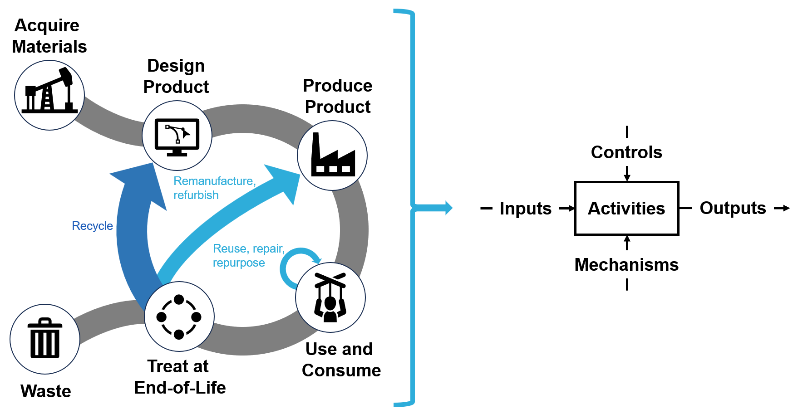

Example pathways that enable the retention of resources, differentiating circular economies from linear economies, as demonstrated in the reference model. Figure adapted from Kelsea Schumacher.
Purpose: Moving away from a linear economy (take, make, waste) motivates manufacturers to rethink how they design, produce, and ship products. In a circular economy, materials are not discarded after use but brought back into the economy in various ways, spurring industries to find ways to better and more efficiently use resources. A challenge for stakeholders involved in implementing circularity is envisioning and coordinating their individual activities in the context of the entire circular system.
To address this challenge, we introduce a reference model to outline the relevant activities, interactions, and other factors that impact a product life cycle within a circular economy.
Reference Model: The Production in a Circular Economy (CE) Model consists of five life cycle activities (Design Product, Acquire Materials, Produce Product, Use and Consume, and Treat at End of Life) that are consistent with manufacturing economic models. Using the IDEF0 functional modeling method, each activity and its relevant inputs, outputs,
controls, and mechanisms for each activity are defined.
To explore the Production in a CE model, select it from the sidebar, or view its
decomposition.
Visit
How to Navigate
for details on the model structure. Introduced below are specific activities or use cases that have been explored in depth.
The Circular Product Design (CPD) Activity Model is a model of the activities and systems involved in designing for circularity.
CPD is an approach that enables designers to facilitate the creation of products for a circular economy (CE).
A key need for CPD is to leverage data from downstream life cycle stages to inform design decisions both initially and iteratively.
The CPD Activity Model outlines design activities and the data to be collected from each other stage of the product lifecycle as it relates to design activities.
Users of the CPD model can include CE researchers, product designers, and standards development bodies, among others.

Inputs, Outputs, Controls, and Mechanisms for the Design Product activity as they relate to other activities within the broader Production in a CE model. Data from other product life cycle stages that should be considered during the design activity are marked with (X).
The model serves as a resource to:
-
Identify differences in data needs and considerations for CPD practices, compared to traditional product design practices
-
Identify areas within CPD that require further development of tools, measurement methods, or standards
-
Determine the data collection necessary to guide design decisions and assess their downstream impacts
-
Plan for information tracking throughout a product life cycle
To explore the design phase only, click the
Design Product activity decomposition
or navigate to the activity by expanding the model tree in the sidebar.
Contact: ananya.nandy@nist.gov
Last updated:
Wed Jan 15 09:34:16 2025